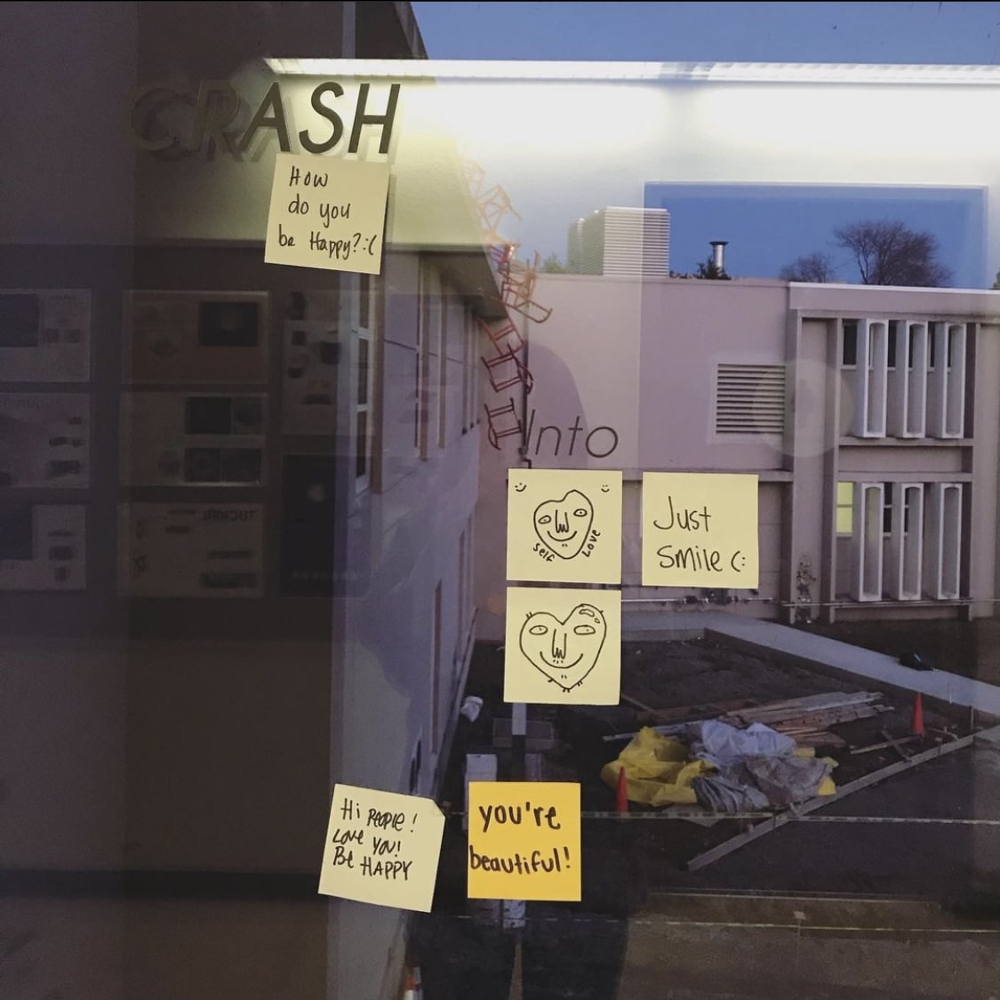

Game Design UX Best Practices - Analysis
FEB 18, 2021
As a child, I used to play mobile games a lot, and as an adult, I have taken an interest in coding them.
Ever since I learned the Java programming language last year, game development has been an area of
fascination for me. But I didn’t know just how much thought went into optimizing the user experience until
I read Game Design UX Best Practices by Amir Dori. This article showed me the various elements that
must be considered when designing a game in order to maximize the retention, engagement, and monetary value of
the experience.
The article touches upon many relevant aspects of screen UI design, including the use of sliders and pop-ups,
asking users to make choices, and ‘rate us’ dialog boxes. Some statements that particularly surprised me were:
1) Avoid the ‘x’ button in the corner to close a pop-up, since users usually regard this with annoyance.
2) The ‘5 stars’ reference for rating mobile apps is against Apple’s guidelines. 3) Do not display a skip
button by default. These tips, plus many more, opened my eyes to the emotional experience that users go
through as they play a game. To design a popular game, one needs to be empathetic and really understand the
challenges that their users face. This article made me realize how user challenges can be overcome to create
the best game experience.
Analysis of My 'Sunset at Pismo Beach' Photo
FEB 10, 2021
Sunset at Pismo Beach, California, January 2019. Photo by Krithika Govind.
This image is captivating for nature and scenery enthusiasts. The depth of the picture, allowing viewers
to see all the way into the horizon, makes it a photo that I believe both lovers of sunsets and people
who are passionate about photography can enjoy. The soft colors and still scenery evoke a calm and
peaceful emotional response from viewers. What makes it especially interesting is the photographic
technique used. To take this image, I used a phone camera held behind a pair of sunglasses. The dark
film on the sunglasses filtered out some of the bright sunlight and created a pinkish glow.
This image is a very important part of my photography archive because because of its scenic beauty. I am
very interested in nature photography, since the wonders of our natural world have always fascinated me.
With no other elements in this photo other than a few trees and the ocean, this image shows us the
tranquility that nature has to offer us.
This photo tells the story of when I visited Pismo Beach over winter break in 2019. I love travelling,
and I especially love the ocean, so I believe this photo encompasses my interests very well. On seeing
this picture, I hope that viewers can vicariously experience the peace that I feel when I am by the ocean.
Analysis of Picture taken by Jiayi Jiang
FEB 10, 2021

Image of ‘Self Love’ Sticky Notes. Photo by Jiayi Jiang.
This is an image of a window with sticky notes that contain positive quotes. It symbolizes hope, optimism,
and self-esteem building. The window looks over what appears to be a parking lot. From the falling chairs
in the background, it appears that this picture was taken in Cruess Hall at UC Davis.
I think the most significant part of this picture is the emotion it brings out in the viewer. On reading
the quotes and seeing the cute, quirky drawings, viewers can feel a sense of reassurance while engaging
with the elements of the image. This image also carries depth, with the main message in the foreground,
and some indications to the setting in the background.
Because the setting looks like a classroom building, I think the most obvious part of this image is that
these notes are meant to give students a respite from the anxieties of their daily lives. College can be
tough sometimes, and between the stress of schoolwork, jobs, and maintaining a household away from home,
students tend to feel overwhelmed. This simple image reminds students to take a break once in a while and
inspires them to feel good about themselves. The most mysterious part of this image is the backdrop of the
parking lot and what appears to be some construction going on. This raises questions about the time of the
year this photo was taken. The falling chairs also raise wonder about their installation and the message
they are trying to convey.
Apple's iPad Pro Website - Interactive Website Design
FEB 4, 2021
Apple’s web page for the iPad Pro is one of my favorite interactive websites. Using website interaction to
simulate augmented reality, this website allows the user to virtually “experience” the features of the
iPad while scrolling through the site. The website uses features such as scale and zoom to show us each
feature of the iPad in close detail, as if we were using the device.
As we scroll through the section about the iPad camera, it zooms into the camera to show us the detail of
its LiDAR scanner for augmented reality. There is another section that swipes through each screen of the
iPad as we scroll, showing us the different editing tools that the device has. On yet another section, we
see a colorful background that zooms out to become the background of the iPad itself. Simply by scrolling
through this website, I was able to get the illusion of actually using the iPad, which was a great
experience. Especially for marketing, this powerful use of imagery plays an important role.
Note: It is best when viewed on a Chrome or Safari browser.
Click here
for a link to the website!
Overlays - Reading Response
JAN 28, 2021
The use of overlays or modals has evolved in UI design – where they used to be an effective design
solution, now they are more of a hindrance. The article Overuse of Overlays: How to Avoid Misusing
Lightboxes by Kathryn Whitenton from the Nielson Norman Group talks about how we can assess when the use
of overlays is appropriate. Whitenton says to ask ourselves the five Ws – who, what, when, where and why –
before deciding to use an overlay.
As a design student, one of the questions I have asked myself the most is “Who am I designing for?” I find
this question to be very useful in thinking about accessibility and ease of use, as Whitenton also mentions.
We must also think about what action we expect the user to perform. When designing websites, I often find
myself styling buttons or dropdowns a certain way because I want to direct the user towards performing a
specific action. It was further useful to see examples of where the use of an overlay hampered the UI.
The question of when an overlay should appear stood out the most to me. When looking for information on a
web page, I find unnecessary popups distracting and often worrisome because they make me unsure about
the legitimacy of the site. I learned how to assess how the timing of an overlay interrupts or affects
the user experience. Overall, this article was very insightful and will definitely help me in future UI
and production-based web projects.
Best Practices for Form Design - Reading Response
JAN 21, 2021
Forms are an extremely purposeful part of website interaction. They enable a user to give
feedback on a product or service, book a hotel room or flight, or log in to access their
personal data on the web. But if not done correctly, they can make for a tedious user experience.
From the article Best practices for form design by Salim Ansari, I learned some simple
steps to ensure a positive response when a user fills out a form. Some of these involve asking
the easy questions first, minimizing dropdown menus, and giving positive form feedback. A few
were surprising to me, such as not providing a reset button and avoiding inline and placeholder
text. Many of the steps were eye-opening, since I was able to picture myself as a user navigating
the frustrations of filling out a long form. For future projects, I now know to keep action button
text precise and to style forms in a column-wise layout to improve readability. For my upcoming Mad
Libs project, these will be good tips to keep in mind.
Finally, Ansari’s article reminded me that our users have a limited attention span, and so it is important to be brief and to progressively display information so as to not cause a cognitive overload. Forms can make or break a user experience – so they must be designed to reduce a user’s frustration and increase their motivation.